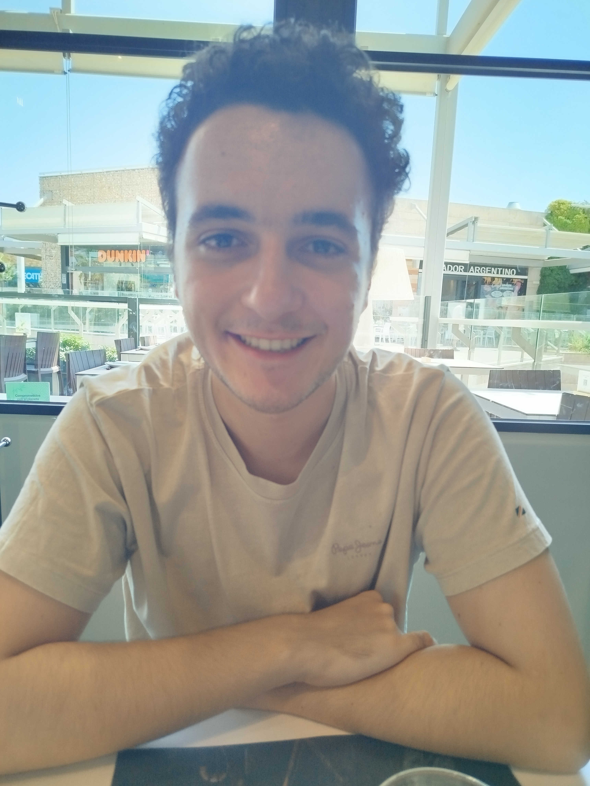

Rafel Monzo Oliver

Informacio personal
- Localitat:Santa margalida
- Fecha de neixament:30-05-2006
- DNI:49773793E
- Hobies:Dibuix,modelatje 3d i videojocs
Resum Profesional
Soc una persona pacient,que sempre entrega en el temps indicat i capas de fer treball en equip,
li sol exigir als meus comapanys de feina que ajudin en el treballs,i es en equip, i que siguin coherents amb els plasos,
tenc facil el mantenir la concentracio,mes encara amb musica de fondo.
Experiencia laboral
-Vaig fer unes practiques a l'ajuntament de santa margalida durant 3 mesos
-Tenc experiencia en tendes d'informatica ,ajudant amb el manteniment dels programes i ordinadors
-Tambe tenc experiencia amb el desarroll d'aplicacions mobil i pagines web en html
Educacio i formacio
Vaig treure la ESO en l'institut IES Santa Margalida ,despres de la ESO vaig començar una formacio profesional de grau mitja de informatica en el institut IES Sineu durant 2 anys.
Despres del grau mitja vaig anar a un grau superior en desarroll d'aplicacions multiplataformes en el Paus Casesnoves durant 2 anys mes.
Finalment amb els coneixements necesaris vaig fer una especialitzacio en videojocs.
Habilitats tecnicas
Tenc experiencia en Javascript,html,unity i amb la creacio de aplicacions mobil
Habilitats
Tenc habilitat en programacio,modelatje 3d,dibuix i lectura
Idiomes
-Catala:Alt
-Castella:Alt
Angles:Mitja/alt
Certificacions i cursos
-ESO
-CFGM en sistemes microinformatics i xarxes a distancia
-CFGS en desarroll d'aplicaicons multiplataformes
Enllaços d'interes
Certificacions tecniques o Cursos especialitzats
-Especialitzacio en videojocs i realitat virtual